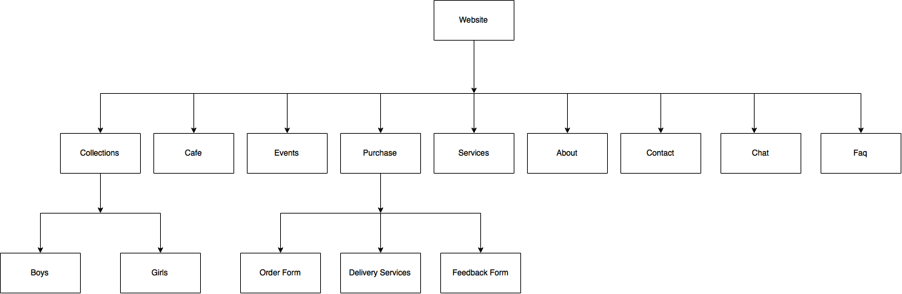

The mission is to provide a
complete experience for todays’ kids with exciting fashion lifestyle products
and to organize fashion shows and cafe under one roof. We hope the website can attract
parents to buy at Frias
The evaluation process would include how long users visit the website, what pages were visited in what order, how many times a page was used from most used pages and least used pages, etc. Counters, weblogs, and capture of demographic information with cookies provide constant monitoring. It will also include advertising in social media such as facebook,twitter and instagram as most people use social media nowadays. Moreover, we should also do the Search Engine Optimization to get the front page of search engine. Search Engine Optimization is the process of maximizing the number of visitors to a particular website by ensuring that the site appears high on the list of results returned by a search engine.
The target audience is kids and parents,
especially mother so that we made the web design into as simple as we can.
Because Frias have different type of target audience I would like to propose
simple and minimalistic design.
For the font choice I chose Serif type of font is more suitable for women and
kids because it shows more elegance.
As the target is kids and parents, we used only few colors to attract the kids and their parents.
So, most kids and their parents can access our website by simply using the simple navigation bar.

https://github.com/legonoroy/Group-Assingment